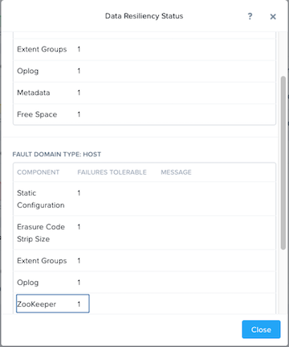

Distributed Storage Fabric¶
Nutanix Distributed Storage Fabric (DSF) ที่อยู่ใน Hypervisor ทำหน้าที่เสมือนเป็น Centralized storage array แต่จะใช้ CVM และ local storage ในแต่ละ node เพื่อ Shared storage ให้กับ Cluster, การรวม Compute และ Distributed local storage เข้าไว้ด้วยกันในลักษณะนี้ จะถูกเรียกว่า Hyperconverged Infrastructure (HCI).
Nutanix DSF จะช่วยให้ Workloads ทำงานได้อย่างมีประสิทธิภาพ และสามารถรองรับการใช้งานได้ หลากหลาย workloads, เช่น enterprise databases, virtual desktops, ROBO, Big Data, และอื่นๆ.
DSF ประกอบไปด้วย 2 ส่วนหลักๆคือ Storage Pool และ Storage Containers.
Storage Pool เป็นการรวม Physical disks ทั้งหมดที่อยู่ใน Cluster ให้เป็นผืนเดียวกันแล้วกระจายข้อมูลไปยัง disks ทุกๆก้อนที่อยู่ใน cluster. โดยที่ไม่จำเป็นกำหนดค่าให้อยู่ยากเหมือนกับ Storage แบบเดิมๆ เช่นการทำ RAID, LUN, MPIO, Mapping. และเมื่อทำการเพิ่ม Node ใหม่เข้าไปใน Cluster ดิสก์จะถูกเพิ่มเข้าไปใน pool โดยอัตโนมัติและ Cluster จะทำการกระจายข้อมูลไปยังดิสก์ใหม่โดยไม่กระทบกับการทำงานและ performance ของระบบ ด้วยการทำงานเป็น background task
Storage Containers เป็น software-defined ที่ใช้สำหรับสร้าง storage policy เพื่อใช้จัดเก็บ VMs หรือ vDisks. ที่อยู่ในระบบตามความเหมาะสมของ workload แต่ละประเภท โดยที่ใน Cluster สามารถสร้างได้มากกว่า 1 Storage Containers
Note
สามารถศึกษารายละเอียดเพิ่มเติมในส่วนของ DSF constructs อย่างเช่น vDisks, extents, และ extent groups เพิ่มเติมได้จาก Nutanix Bible
Note
ภายใน Labs นี้ จะมีการยกตัวอย่างด้วย XYZ หรือ Initial อยู่บ่อยครั้ง ดังนั้นให้ผู้เรียนสังเกตุ และเปลี่ยนตัวอย่างดังกล่าวให้เป็นชื่อของผู้เรียนเอง หรือเป็น User#No. ที่ได้รับมอบหมาย
Configuring Storage Containers¶
ใน Prism Element> Storage, คลิก**Storage**, คลิก**Table**, แล้วคลิก**+ Storage Container**.
กำหนดค่าต่างๆ ดังนี้:
Name - Initials-container
เลือก Advanced Settings
Advertised Capacity - 500 GiB
เลือก Compression
Delay (In Minutes) - 0
Note
ค่าต่างๆ ที่ไม่ได้ระบุ ให้ใช้ค่า default values.
คลิก**Save**.
Storage container จะพร้อมใช้งานในทุก Node ใน Cluster.
สำหรับ AHV นั้น Hypervisor จะสร้าง iSCSI แยกออกมาเพื่อเชื่อมต่อไปยัง DSF และให้ vDisk นำไปใช้งาน แต่ในส่วน ESXi environments นั้น แต่ละ Storage Container จะถูก mount ไปยัง hypervisor โดยอัตโนมัติในรูปแบบของ NFS datastore และใน Hyper-V แต่ละ Storage Container จะทำการเชื่อมต่อไปยัง Hypervisor ด้วย SMB datastore.
Note
ตัวอย่าง Storage Containers ใน Prism:
ตัวอย่าง Storage Containers (datastores) จากมุมมองของ vCenter:
เราสามารถสร้าง Container ได้หลาย Container เพื่อใช้กับ policies ที่หลากหลาย โดยที่พื้นที่ทั้งหมดจะมาจาก Storage Pool.
ยกตัวอย่างเช่น เราสามารถเปิดการใช้งาน deduplication ที่ใช้เก็บ persistent virtual desktops ในแบบ Full clone ได้ เพื่อลดพื้นที่การจัดเก็บข้อมูลของ VDI, *ข้อควรระวัง deduplication อาจไม่เหมาะที่จะใหช้งานกับบาง workloads ที่ต้องการ performance เช่น databases.
ในขณะเดียวกันเราสามารถสร้าง storage container แล้วเปิดการใช้งาน erasure coding ให้กับ workloads ที่เป็น archival data อย่างเช่นงาน backups หรือ security footage ได้
เราสามารถตรวจสอบค่า Config ต่างๆ ได้ด้วยการคลิกที่ “Update” ที่ Storage Container นั้นๆ เราจะมั่นใจได้อย่างไรว่าจะมีพื้นที่เพียงพอสำหรับ VM ที่สำคัญ เมื่อเราใช้งานร่วมกันหลาย workloads ใน Cluster เดียวกัน?
ลองเลือก storage containers ต่างๆ แล้วลองตรวจสอบที่ Storage Container Details ที่อยู่ด้านล่าง.
จากภาพด้านบนจะแสดงรายละเอียดการใช้งานของ Storage Container และยังสามารถบอกได้ว่าช่วยลดการจัดเก็บข้อมูลเพื่อช่วยประหยัดพื้นที่ไปได้เท่าไร ตัวอย่างเช่น Data Reduction Ratio ที่คำนวนหลังจากเราเปิดใช้งาน compression, deduplication, และ erasure coding เท่านั้น แต่ในกรณีของ Overall Efficiency จะคำนวนจาก Data Reduction รวมกับ thin provisioning และ cloning ต่างๆ
Note
หากต้องการทราบว่าพื้นที่ในการจัดเก็บข้อมูลของ Nutanix ระหว่าง RF2 และ RF3 มีความแตกต่างกันอย่างไร สามารถดูได้จาก Nutanix Storage Calculator.
Replication Factor (RF)¶
การจัดเก็บข้อมูลใน Nutanix ใช้วิธีเก็บข้อมูลแบบ Replication Factor (RF) เพื่อปกป้องข้อมูลและให้ความปลอดภัยที่มีมากกว่าเทคนิคการทำ RAID ในแบบดั้งเดิม
โดยปกติแล้ว Nutanix จะทำการสำเนาของข้อมูลสองชุดและกระจายไปยัง Node ต่างๆเพื่อป้องกันความเสียหายที่เกิดขึ้นในกรณีที่ Node ใด Node หนึ่งมีปัญหาเกิดขึ้น เรียกว่า RF2 และสำหรับ Cluster ที่มีขนาดใหญ่ หรือ มี Critical workloads จำนวณมาก Nutanix สามารถเขียนข้อมูลสามชุดและกระจายไปยัง Node ต่างๆเพื่อป้องกันการเสียหายในกรณีที่มี 2 Node เกิดความเสียหายขึ้นพร้อมๆ กัน เรียกว่า RF3
สามารถเรียนรู้เพิ่มเติมเรื่องการทำงานของ RF ได้จาก Video ด้านล่าง!
เราสามารถกำหนด RF policies ในระดับ storage container ด้วย Prism Element.
เรายังสามารถกำหนด availability domain policies ในระดับ Block หรือ Rack level ได้อีกด้วย.
Block Awareness เหมาะกับ Cluster ที่มีขนาดใหญ่ โดยการจัดเก็บข้อมูลของ copies ที่ 2 จะไม่เก็บใน node ที่อยู่ภายใน Enclosure/Block เดียวกัน เพื่อป้องกันในกรณีที่เกิดการเสียหายทั้ง enclosure/block นั่นเอง ด้วยคุณสมบัตินี้ จึงรองรับการเสียหายของ node ได้หลาย node โดยที่ข้อมูลยังมีความปลอดภัยอยู่ ด้วยหลักการเดียวกันนี้เอง สามารถประยุกต์ใช้กับการป้องกันในระดับ rack ได้เช่นเดียวกัน โดยการเก็บกระจายในแต่ละ rack นั่นเอง
การจัดเก็บข้อมูลในแบบ rack/block ต้องมีขั้นต่ำ 3 blocks ใน cluster (สำหรับ RF2) เพื่อทำการจัดเก็บ metadata จำนวณ 3 copies.
ใน Prism > Home, คลิก**OK** ในช่อง Data Resiliency Status.
Data Resiliency Status บอกถึงจำนวนที่ส่วนต่างๆจะสามารถเกิดความเสียหายได้ โดยที่ไม่กระทบกับการทำงานของ cluster ในรายการแต่ละ service นั้นจะมีหน้าที่เฉพาะของแต่ละอย่างใน cluster อย่างเช่น Zookeeper nodes มีหน้าที่ในการเก็บข้อมูลค่า configuration ต่างๆ ที่กำหนดไว้ (สถานะของ Service, IPs, ข้อมูล host และอื่นๆ) ของตัว cluster
RF ของ cluster ใน Prism Element สามารถกำหนดได้โดยคลิกที่เมนู Redundancy State ที่อยู่ในเครื่องหมาย .
Note
สำหรับ Lab นี้ กำหนดให้ใช้การกระจายข้อมูลแบบ RF2.
กรณีที่ใช้การเก็บข้อมูลแบบ RF2 ใน Cluster เราสามารถเปลี่ยนมาใช้งาน RF3 ได้ เมื่อมีจำนวณ nodes ตั้งแต่ 5 nodes ขึ้นไป และในกรณีที่เราใช้ RF3 จะมีการสร้าง Metadata 5 ชุดของทุกๆ ข้อมูลที่จัดเก็บ โดยไม่คำนึงถึงว่าในแต่ละ storage container จะถูกกำหนดเป็น RF2 หรือ RF3 ก็ตาม